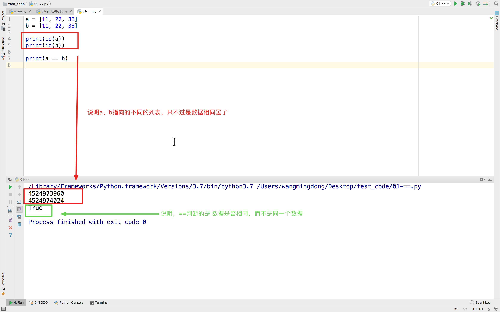
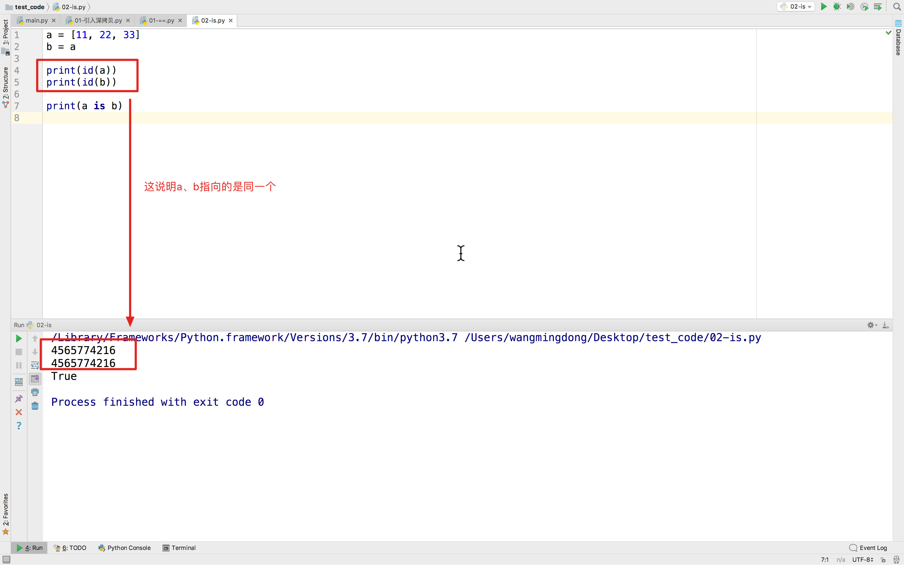

==、is
1. 目的
很多时候，需要判断两个对象是否相同，此时我们往往能想到的是==，但有时这样是不严谨的，容易产生问题
这也是我们学习is的原因
2. ==判断的数值
2.1 ==理解
之前我们在使用学习if判断时，经常会用到 如果 谁等于谁，那么。。。。，用==能够判断出对比的两个对象的是否相同，但不能保证是同一个。
例如：
张三有个iPhone x手机，你也有一个iPhone x手机，那么此时用==就能够判断是否相等，此时结果为True表示，你们两个人的手机是相同的，此时指的是大小、型号、重量、外观等。。。但不是同一个
2.2 测试
a = [11, 22, 33]
b = [11, 22, 33]
print(id(a))
print(id(b))
print(a == b)
测试效果：

3. is判断是否同一个
既然==已经判断了是否数据相同，那is肯定是不一样的功能，否则就不符合常理了
is的作用就是判断是否是同一个对象
例如：
一对兄弟，他们的亲生父母都是相同的，此时用==能够得到True，但是is能更好的体现出来，而且还是同一个
a = [11, 22, 33]
b = a
print(id(a))
print(id(b))
print(a is b)

4. 总结
is是比较两个引用是否指向了同一个对象（引用比较）==是比较两个对象的值是否相等（值比较）